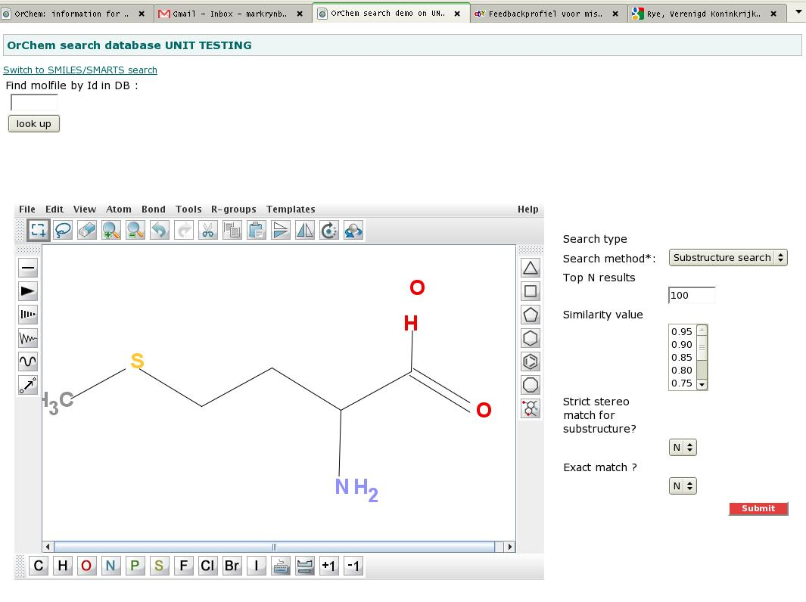
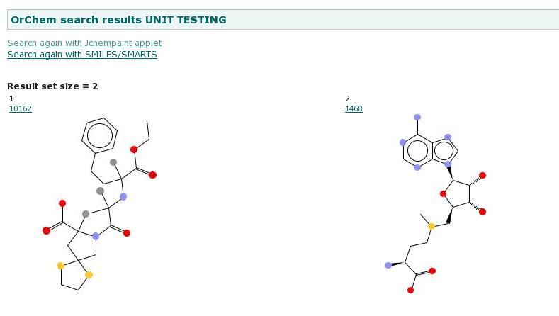

IntroductionThis page contains (some detailed) pointers for people doing development on OrChem.Broadly speaking, the main development for OrChem is done in Java. The CDK is used as a core library around which OrChem Java classes are wrapped to be used as Java stored procedures, having a public static entry point. The functions can be invoked through a required PL/SQL wrapper around them. To see how that works, take a look at the query select orchem_calculate.charge('[O-]C([N+])C([N+])C','SMILES') C from dual This is a SQL statement that calls a Pl/SQL function called 'charge' in package 'orchem_calculate'. When you look inside that package, you see this: FUNCTION charge(molecule clob,input_type varchar2) RETURN number IS LANGUAGE JAVA NAME 'uk.ac.ebi.orchem.calc.ChemicalProperties.calculateCharge(oracle.sql.CLOB , java.lang.String) return oracle.sql.NUMBER'; So, the PL/SQL wraps a function in a Java class called ChemicalProperties. That class has a public static method 'calculateCharge', which in the end makes a call to the CDK, in this case 'AtomContainerManipulator.getTotalFormalCharge(mol)'. This is generally the way things are (and should stay) structured in OrChem. The Pl/SQL tends to be a thin layer, the OrChem Java classes do database specific things and any chemical functionality should be coming from the CDK, not OrChem directly. |
Requirements and softwareDeveloping OrChem requires you have knowlegde of Java, Pl/SQL, SQL and JDBC. Oracle 11G runs Java version 5, so any Java development (and compilation) needs to be Java 5 compliant.Requirements for development environment
|
Whats where?The Orchem source folders contain a mix of Java, PL/SQL and SQL. There is also a Web folder containing a web application which allows you to enter a search (drawn or by text) and admire the search results. The web application is not meant as a core deliverable, it's more for use in development.The Orchem folder structure is shown below:
build.xml : ant build file
doc : contains the documentation you are reading now
orchem.jdev11.jpr/orchem.jdev11.jws : JDeveloper project definition files
properties : properties you have to override for running the test or web application
public_html : Demo web application to visualize searching
├- WEB-INF :
├- lib : any jar file needed by OrChem (to do: put non-web jar files in separate lib folder)
sh : Unix shell script(s)
sql : DDL for building OrChem objects
├- calculate.plsql : Pl/Sql for chemical calculation packages
├- convert.plsql : Pl/Sql for file format conversion
├- createfingerprints.plsql : Pl/Sql for fingerprint creation
├- .... : etc ...
├- tables.sql : Tables
├- types.sql : Types
├- .... : etc ...
src : Java source folder
uk/ac/ebi/orchem :
├- bean : Beans
├- calc : Calculation of chemical properties
├- codegen : Generator for QSAR descriptor classes
├- convert : Conversion between chemical file formats
├- fingerprint : Fingerprinting of compounds
├- isomorphism : Isomorphism/Vf2 used for substructure searching
├- load : Persisting fingerprints
├- qsar : Qsar calculations
├- search : Search algorithms
├- shared : Utility classes
├- tautomers : Tautomer generation
├- test : JUnit test classes
├- web : Struts action classes for demo web app
test : Unit testing
├- main.pl : Main test API, little interactive Perl program
├- step1_compoundload.bash : Linux bash script to load a test set of compounds into the test schema
├- step1_compoundload.bat : Windows equivalent
├- ... : etc ..
|
BuildingThe build file has the following options/targets:
|
Unit testingOrChem consists of Oracle and Java components; both need to be part of the unit test process.A test suite has been set up to test everything from setting up a new OrChem schema to similarity and substructure searching. You can run the test suite from the command line. Both Linux and Windows are supported by the framework. To use the framework, you must have Perl and Ant installed (download and install if necessary before continuing). In cvs directory "OrChem/test" you can find the test framework. The idea is that after making changes to OrChem, you execute the complete set of test steps. This way, you'll be testing not just Java but also Oracle components and the dependencies between Java and the database. Setting up the unit test
|
Creating a CDK jar file that loads into OracleThe CDK jar file loaded into Oracle is built with one or two hacks, steps of which are described below. The steps are necessary because Aurora doesn't really get the various "@Test.." annotations used throughout the CDK, so these source code lines must be stripped out. Any Java 6 or 7 feature must be stripped out, really. Below is a way to do this on Linux (using a shell script).
|
Creating the InChi jar fileBackground: the CDK uses JNI-InChI to generate InChI descriptors, but this approach does not work for OrChem. The problem is in the dynamic loading of libraries, something that is not allowed with the Oracle JVM.Instead, a direct conversion from the InChI C++ source files to a Java class is used. This conversion is done by us with NestedVM, a clever tool capable of compiling C++ into a Java class. Below follow the steps necessary to create the jar file from the C++ source code.
|
Demo web appThe OrChem folder structure contains a web application for test purposes, see some screenshots below.With the web application you can visualize your searches, rather than doing them from the database command line. To make things work, you first of all need to copy file 'properties/webapp.properties' into folder 'properties/my_local_copies' and edit this file with settings that work for your local test database. We managed to get the demo web application working in JDeveloper, but to set this up was complicated. An easier option is to run the ant task 'war' and deploy the resulting war file to a Tomcat server and run it there.   |